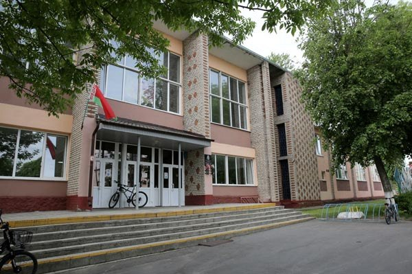

Сила рождается у Днепра
Если идти по Жлобину в сторону парка «Приднепровский», то на улице Первомайской, 1А не раздастся громких афиш и глянцевых вывесок. Зато отсюда, из обычного спортивного зала, шагнули в большой спорт олимпийцы, чемпионы Европы и мастера спорта международного класса. Это Жлобинская районная специализированная детско-юношеская школа олимпийского резерва.
Сегодня в школе культивируются четыре единоборства: греко-римская борьба, бокс, таиландский бокс с кикбоксингом и самбо. Ребят принимают с девяти лет — и с первого дня они попадают в серьёзную спортивную атмосферу: зал бокса, зал тайского бокса и кикбоксинга, просторный зал борьбы, большой спортивный зал и своё спортивное ядро длиной в 300 метров. Возглавляет школу Жанна Михайловна Сергейко.
Отделению греко-римской борьбы в 2025 году исполнилось 45 лет. Его история началась в мае 1980-го, когда во Дворце спорта, что у самого парка «Приднепровский», открылась секция борьбы классической. Первый тренер Олег Слепцов набрал группу мальчишек, и уже скоро они начали побеждать на республиканских турнирах. Так родилась жлобинская школа борьбы, ставшая одной из сильнейших в стране.
Дорогу в большой спорт отсюда начали мастер спорта международного класса Игорь Петренко — участник Олимпиад в Атланте и Сиднее; заслуженный мастер спорта Александр Кикинёв — участник Игр в Афинах и Лондоне; и мастер спорта международного класса Юрий Дубинин, выступавший на Олимпиаде в Пекине. Три олимпийца из одного маленького города — это не совпадение, это система.
У школы есть и живая легенда: Олег Гузов. Он попал в первый набор десятилетним мальчишкой — просто шёл через парк «Приднепровский» мимо Дворца спорта и увидел объявление о наборе в секцию. Борьба захватила его с первых тренировок, а потом стала делом жизни: за 37 лет тренерской работы он подготовил мастера спорта международного класса, четырёх мастеров спорта и десятки кандидатов в мастера. Сегодня в отделении борются пять тренеров и 157 юных спортсменов. Результаты говорят сами за себя: в 2024 и 2025 годах команды СДЮШОР становились победителями первенства Республики Беларусь, а в национальную юношескую сборную вошли сразу пятеро воспитанников.
Бокс в жлобинской спортшколе — это целая эпоха, имя которой Альфрит Яхиевич Ахметов. С отличием окончив институт физкультуры, с февраля 1980 года он работал старшим тренером отделения бокса и подготовил немало отличных бойцов. В 1991 году его жизнь трагически оборвалась, но дело учителя не умерло.
С того же 1991 года в Жлобине проводится международный юношеский турнир по боксу памяти Альфрита Ахметова. За десятилетия на ринг выходили юные боксёры из России, Украины, Молдовы, Литвы, Израиля, Азербайджана, Таджикистана, Грузии — и, конечно, Беларуси. Сегодня в турнире сходится около 150 бойцов, а на открытии по традиции присутствует семья тренера: память здесь не принято формальной. Символично, что на недавнем турнире призёром стал Дамир Ахметов, внук тренера, чьё имя носит ринг. Имя продолжает бить правой прямой.
Боксёрская молодёжь школы побеждает и за её пределами: сборная Жлобинской СДЮШОР взяла серебро областных Олимпийских дней молодёжи в Гомеле, воспитанник Кирилл Дугарь стал победителем международного турнира в Жабинке, а Степан Цыркунов получил звание мастера спорта Республики Беларусь.
Секрет жлобинской школы не в дорогом оборудовании, а в людях и традиции. Здесь тренер — это наставник на всю жизнь: от Слепцова через Гузова до сегодняшних наставников. Здесь имя героя хранят не на табличке, а в турнирах, на которые приезжают сотни ребят из пяти стран. И здесь десятилетний мальчишка, зашедший из любопытства в зал у парка «Приднепровский», через двадцать лет может сам стоять у края ковра — уже как тренер чемпионов.
Жлобинская СДЮШОР — это место, где маленький город каждый год доказывает: сила рождается не там, где много денег, а там, где есть память, характер и руки, которые умеют и бороться, и поддержать.